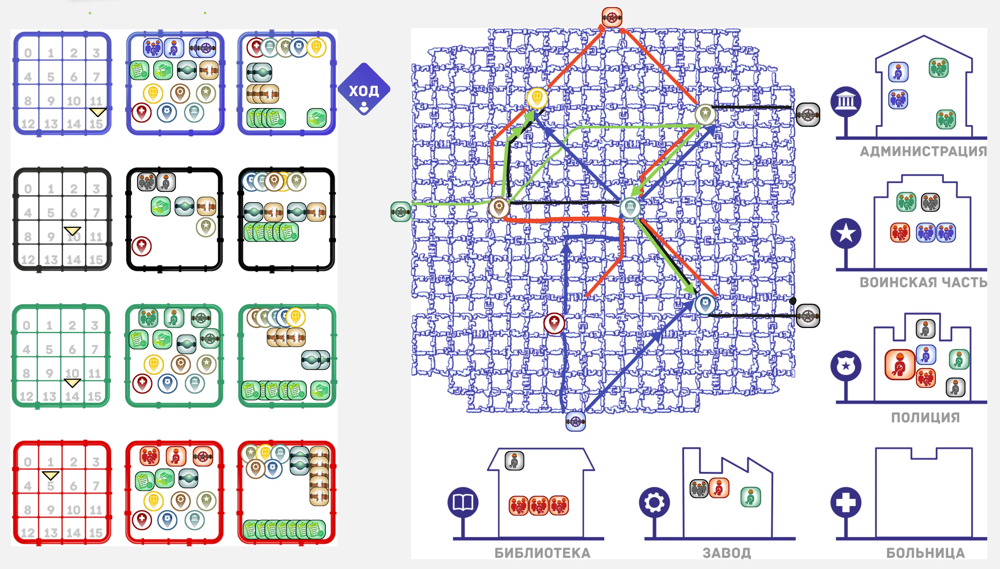
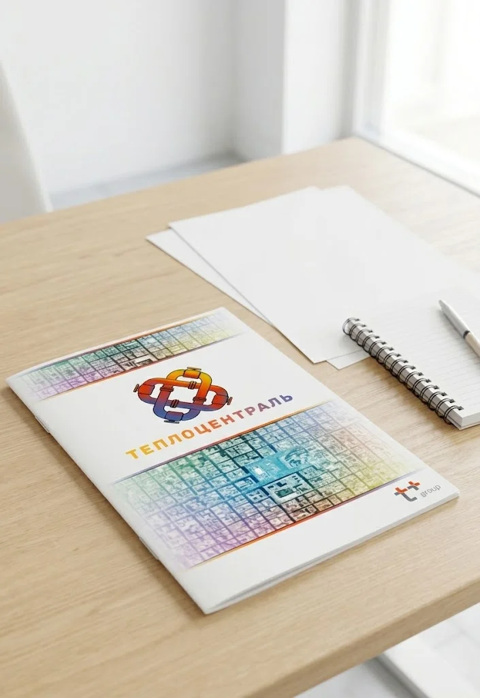
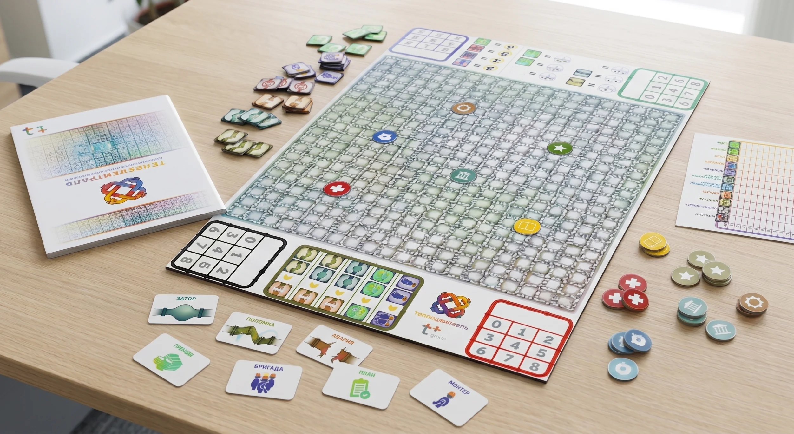

Теплоцентраль —
как «починить» город
Teplocentral —
how to fix a city
Командная обучающая игра для Т Плюс: участники прокладывают теплосети, устраняют аварии, распределяют ресурсы. Профориентация в инженерные специальности энергетики. Эволюция продукта: настольная версия (2016) → онлайн-формат (2022–2023). A learning team game for T Plus: players lay out heating networks, resolve emergencies, manage resources. Career-guidance into engineering energy specialties. Product evolution: board version (2016) → online format (2022–2023).
КонтекстContext
У энергетической отрасли — демографическая проблема: студентов инженерных специальностей мало, выпускники уходят в другие сектора. Т Плюс нужен был инструмент, который бы показал школьникам и студентам, что работа в теплоэнергетике — это интересно, не на словах, а на ощущении.
Настольная версия 2016 года хорошо работала на профориентационных мероприятиях, но у неё был потолок: её можно было провести только очно, с ведущим, для десятков людей. Масштаб — ограниченный.
The energy industry has a demographic problem: fewer students choose engineering specialties, and graduates often drift into other sectors. T Plus needed a tool that would show schoolchildren and students that heating-engineering is genuinely interesting — not in a brochure, but as a felt experience.
The 2016 board version worked well on in-person career days, but it had a ceiling: you could only play it live, with a facilitator, for dozens of people. Limited scale.
Моя рольMy role
Я отвечал за геймдизайн и визуальный дизайн: механики игры, экономика, баланс, персонажи, иконография, карты, UI онлайн-версии. Работал в паре с методологом-методистом и разработчиком онлайн-формата.
Что конкретно сделал:
- Адаптировал настольные механики 2016 года в онлайн-формат — сохранив драматургию «аварии на карте» и «коллективное решение».
- Спроектировал систему событий: случайные аварии с привязкой к реальным кейсам теплосетей.
- Выстроил баланс: ресурсы / время / степень повреждения сети — так, чтобы команды всегда находились в «зоне напряжения», но не проигрывали детерминированно.
- Разработал визуальную систему: карта города, состояние инфраструктуры, аварии, бригады — единый язык между настолкой и онлайн-форматом.
I owned game design and visual design: mechanics, economy, balance, characters, iconography, city maps, online-version UI. I partnered with a training methodologist and a developer for the online format.
Specifically, I:
- Adapted the 2016 board mechanics into an online format — preserving the drama of "incident on the map" and "collective decision".
- Designed the event system: random incidents grounded in real heating-network cases.
- Tuned balance: resources / time / damage — so teams always sit in a "tension zone" without a deterministic loss.
- Built the visual system: city map, infrastructure states, incidents, crews — one shared language across board and online.
Ключевые решенияKey decisions
Не копировать настолку в онлайн. Мы не воспроизводили все компоненты «один-в-один», а выделили три ядра опыта — планирование сети, кризисное управление авариями, распределение ресурсов — и пересобрали интерфейс вокруг них.
Кейсы из реальности. Все аварийные сценарии — адаптации реальных кейсов Т Плюс. Это снимает «игрушечность» и заставляет участников всерьёз обсуждать решения.
Не-соревнование с победителем. В центре — совместное преодоление системного сбоя. Команды не конкурируют между собой, они конкурируют со сложностью сценария. Это даёт пространство для переговоров и честной рефлексии.
Don't port the board game — rebuild it. We didn't one-to-one copy the components. Instead we extracted three experience cores — network planning, incident crisis-management, resource allocation — and re-assembled the interface around them.
Cases from reality. Every incident scenario is adapted from real T Plus cases. This strips the "toy" feeling and forces serious discussion of decisions.
No winner-take-all competition. The core is collective response to a systemic failure. Teams don't compete with each other — they compete with the scenario's complexity. That opens space for negotiation and honest reflection.
Результаты Results
Скриншоты и фото Screenshots and photos





Что узналTakeaways
Игра «работает» 10+ лет — первая настольная версия вышла в 2016 году, и это главный показатель. Не было одного большого запуска и забвения, был плавный переход из настолки в цифру с сохранением идентичности.
Ключевой вывод для меня: если дидактика игры реальна, игра будет жить дольше бюджета рекламной кампании. Студенты не запоминают слайды — они запоминают, как их команда спасла город под давлением.
The game has been alive for 10+ years — the first board version shipped in 2016, and that's the real metric. There was no single launch-and-forget; it was a smooth migration from board to digital while keeping the identity.
Key takeaway: if the didactics are real, a game outlives its marketing budget. Students don't remember slides — they remember how their team saved a city under pressure.
МФТИ · Endowment → MIPT · Endowment →
Настольная стратегия про целевой капитал. Грант Потанина. Board strategy about endowment funds. Potanin Grant.